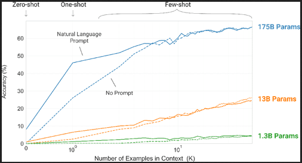

Questionnaire
Q1:
Provide an example of where the bear classification model might work poorly in production, due to structural or style differences in the training data.
___ * There is many cases where the bear_classifaction model could produce low results because of low quality of training data: - imbalance dataset: where we have much datapoint of one class way more than other classes, what causes the model to be biased toward one class. - the image used in training are low quality, low resolution.
Q2: Where do text models currently have a major deficiency? ___ * The current transformers models shows oustanding results in generating texts and essais, understanding (in a way!) human language and can participate in a full conversation on different topics and give understandable and admirable responses. * However the way models learn from text is way different than the human do. Models needs a huge amount of text data: 
- In this paper,Climbing towards NLU: On Meaning, Form, and Understanding in the Age of Data Emily Bender and Alexander Koller consider whether LMs such as GPT-3 or BERT can ever learn to “understand” language? the researchers insists on deffirentiate between form (which LMs are good at understanding) and meaning( which obviously LMs can’t understand).
Q3:
What are the possible negative societal implications of text generation models?
___ * If someone uses these LMs to generate highly-compeling responds on social media in order to spred misinformation or encourage conflits.
Q4:
In situations where a model might make mistakes, and those mistakes could be harmful, what is a good alternative to automating a process?
___
* In this case we need to set a system where there’s a human intervention.
Q5:
What are the steps of the Drivetrain approach?
___ - Define your Objective
- Levers
- Data
- Models
Q6:
What is DataLoaders?
___ * DataLoaders is a Fastai thin class that coutains dataloader for training and validation.
Q7:
What four things do we need to tell fastai to create DataLoaders?
___ * Data we have * How to get items * How to label them * How to create train/validation
Q8:
What does the splitter parameter to DataBlock do? ___ * Splitter provide the way we want our data set to be splited.
Q9:
How do we ensure a random split always gives the same validation set?
___ * By fixing the seed value.
Q10:
What letters are often used to signify the independent and dependent variables?
____ * x for independent variables, y for dependent.
Q11:
What’s the difference between crop, pad, and squish Resize() approaches? When might you choose one over the other?
___
Crop is the default
Resize()method, which crop the image and take desired dimension, this may cause losing important information.Pad is an alternative Resize() method, which pads the matrix of the image’s pixels with zeros (which shows as black when viewing the images), this may results in a lower effective resolution for the part of the image we actually use.
Squish is another alternative Resize() method, which can either squish or stretch the image. This can cause the image to take on an unrealistic shape, leading to a model that learns that things look different to how they actually are, which we would expect to result in lower accuracy.
The better method is something depends on the problem we have, type of data we will use..
We will see later different methods, like
RandomResizeCropand many more.
Q12:
What is data augmentation? Why is it needed?
___
* Data augmentation refer to the process of generating more datapoints from the actaual data we have, and representing it within the dataset. * For example we could take an image and do some type of transformation to it, like flipping it or ratating it the resize the crop it, which will give us many images with different views and sizes. * This method other than making our dataset larger, it make it rich and diverse which will without doubt influence the generalization of the model.
Q13:
What is the difference between item_tfms and batch_tfms?
___ * item_tfms is done on cpu, batch_tfms on gpu.
Q14:
What is a confusion matrix?
___ * confusion_matrix return where the model get wrong prediction and what was the actual label.
Q15:
What does export save do?
____ * It saves 3 things: - the architecture - the updated parameters(weihts+biases) - the way we built dataloaders
Q15:
What is it called when we use a model for getting predictions, instead of training?
____ * Inference